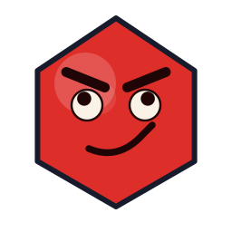
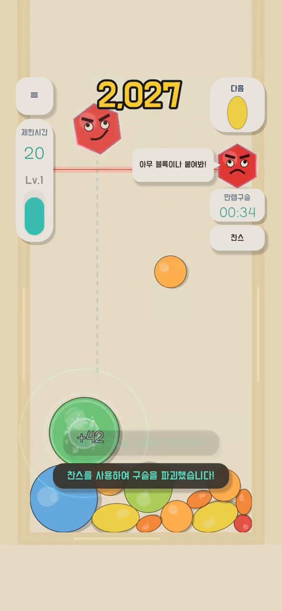
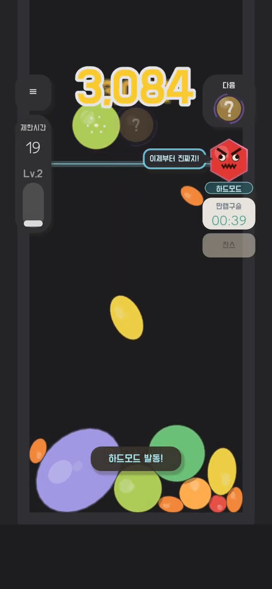
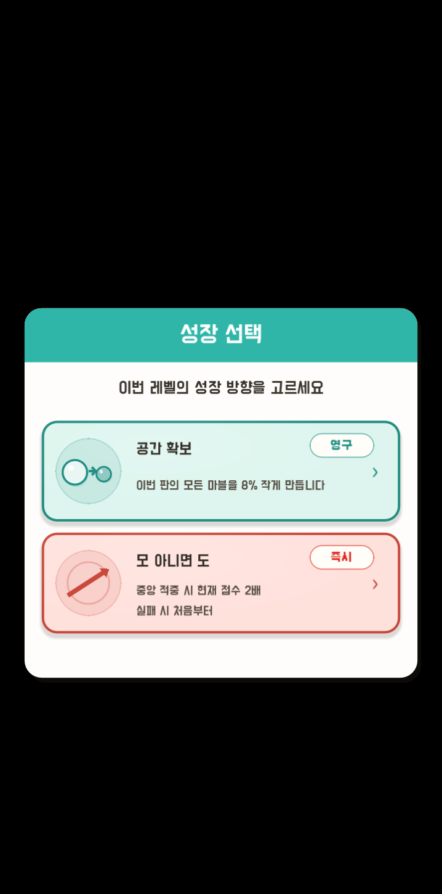
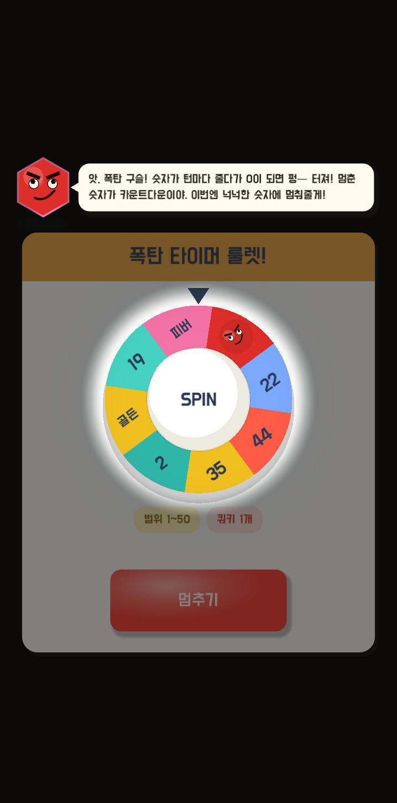

DROP
Read the next marble and the open space, then choose where it lands. One drop changes the physics of the whole board.

Merge matching marbles into something bigger, then use Quirky and growth choices to reshape the board. A physics merge puzzle built around the escape gate waiting every ten levels.

Read the next marble and the open space, then choose where it lands. One drop changes the physics of the whole board.
Bring matching marbles together to make something bigger. Every chain reaction opens space and raises the score.
Use growth choices and level-up chances to break through the escape gate that appears every ten levels.
02 · CHANGE THE RUN
Even-level choices, odd-level chances, Quirky, and special marbles turn the same opening into a different run.
At every even level, choose between a permanent upgrade and an instant effect. Decide whether to build safely or make a bold move now.
At odd levels, the roulette can bring a bonus, a breakthrough, or Hard Mode. Even the stopping point is a decision.
Quirky's clone merges with any marble. Use bombs, golden marbles, and Fever to turn a crowded board around.
Compete across score, time attack, country or group, friends, and tier records in each two-week season.
03 · CURRENT BUILD 0.2.0
Fresh frames from the latest gameplay recording and the 0.2.0 QA build show core play, Hard Mode, Growth Choice, and Bomb Roulette in tilted iOS mockups.




A HOUSE DUCK GAME
Quirky Ball is the first game in development at House Duck. Its PRE-RELEASE changes and mistakes are documented on the development blog.
COMING FIRST TO GOOGLE PLAY
Quirky Ball is being prepared for Google Play. The official store link will appear here when it is ready.